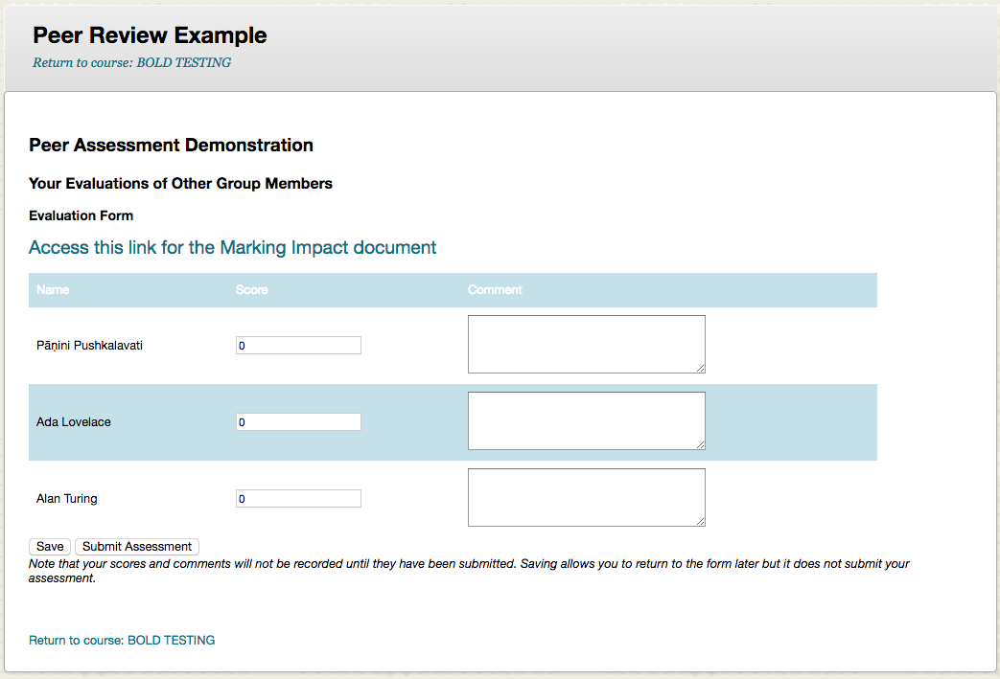
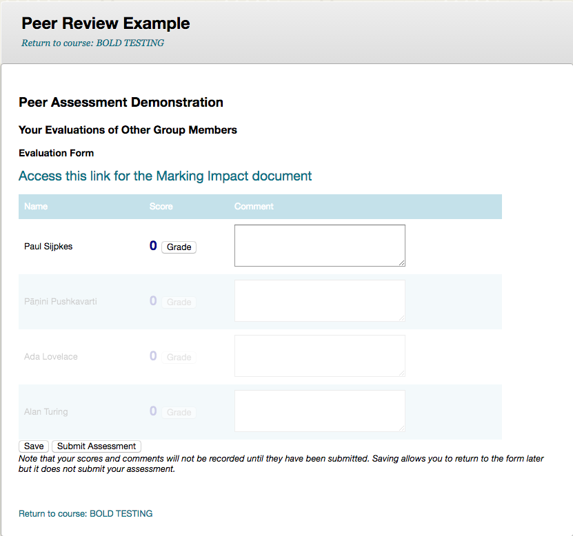

Students
The instructor may elect to use a rubric or not, without a rubric the student view will look like the top image. With the rubric a button will appear as in the second image. Use the button to assess the other students.
If your instructor has self assessment turned on, the first person in the list will be yourself (bottom image). You will not be able to evaluate other students until you have evaluated yourself.
Save vs. Submit
-
The Save button will allow you to save your submission and return to it later.
-
The Submit button will submit the assessment and will not allow you to return to it. However, if your instructor has rolling review turned on you will be able to continue submitting multiple reviews.
No rubric
Note that the wording of these screens may vary depending on the course you are in

With Rubric
Note that the wording of these screens may vary depending on the course you are in

With Rubric and Self-Assess
Note that the wording of these screens may vary depending on the course you are in
